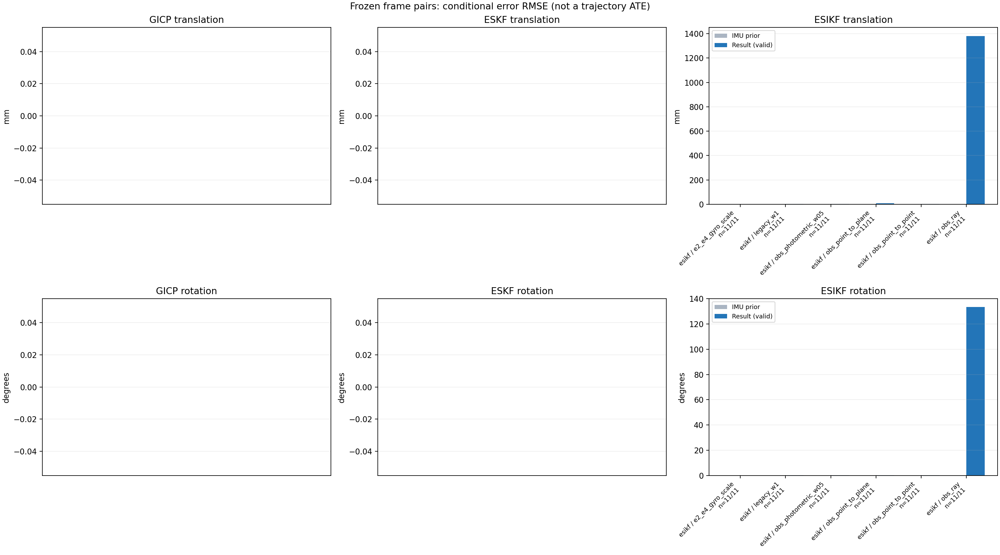

20261015_113028_roll_right · depth=disparity_cache · cache=e0cb1ba37dee4d14e372
模型视差：/home/ubuntu22/slam/SIO_SLAM/models/tensorrt/disp_896x448_fp16.plan；engine SHA256=604cf6ac1f705c877260711730dd5d2d58c2a21f3020c03c668401ef7fb1e768。输入为生产裁剪与光照处理后的 RGB 0..255；此实验使用原始浮点像素视差，不应用完整前端的邻域视差后处理。
原始 ONNX SHA256：e9f49736a65d68d06681add463866b6defdf78fdd7f4f50f6cc941b682fdc0bc。
代价体图改写验证：ONNX Runtime 固定随机特征输入，最大绝对误差 0；该项检查图改写，完整模型精度仍需由录制数据评估。
配准代码版本：744ac2d993ae629b0cc44a3b1d995e04ab4fad48；观测生成版本：744ac2d993ae629b0cc44a3b1d995e04ab4fad48。
固定图像对与纯 IMU 先验；ESKF 回放固定 GICP 观测，ESIKF 直接读取点云。真值只用于此报告。
同时查看 converged 与 solver_status：上游默认 Stereo 在 max_iter / stopped_at_minimum 时也可能置 converged=true。valid 表示输入检查通过，不表示精度提升。欧氏 GICP 未提供独立的点距 RMSE，该列显示 NaN。
误差按每对图像的锚点计算，单位 m / degrees。此处 RMSE 不是全序列 ATE；末帧受同一锚点条件约束。NIS 与条件马氏距离是诊断量，少量相关图像对不能用于宣称协方差已校准。
全部指标 CSV · R / P 矩阵 CSV · Stereo 求解逐轮 CSV · ESIKF 逐轮轨迹 CSV · 末轮 H / R / K_pose 矩阵 CSV · 配置快照 · 矢量图
unflagged 排除纯惯性先验平移误差超过 50 mm 的图像对；whitened 为误差按协方差白化后的每自由度均值，协方差与实际误差相符时约为 1。
| stage | method | variant | valid | total | result_translation_rmse_m | result_rotation_rmse_deg | result_translation_median_m | result_rotation_median_deg | result_translation_rmse_unflagged_m | result_rotation_rmse_unflagged_deg | improved_translation | improved_rotation | posterior_whitened_by_P_rot_mean | posterior_whitened_by_P_trans_mean |
|---|---|---|---|---|---|---|---|---|---|---|---|---|---|---|
| esikf | esikf | e2_e4_gyro_scale | 11 | 11 | 0.0013323 | 0.012227 | 0.00021495 | 0.0071755 | 0.0013323 | 0.012227 | 1 | 0 | 1.2261 | 3.3993 |
| esikf | esikf | legacy_w1 | 11 | 11 | 0.0020199 | 0.065283 | 0.00081998 | 0.034768 | 0.0020199 | 0.065283 | 0 | 0 | 7.0569 | 4.4929 |
| esikf | esikf | obs_photometric_w05 | 11 | 11 | 0.0023576 | 0.085781 | 0.0010918 | 0.042922 | 0.0023576 | 0.085781 | 0 | 0 | 5.9523 | 3.0599 |
| esikf | esikf | obs_point_to_plane | 11 | 11 | 0.0075191 | 0.23395 | 0.0061574 | 0.19164 | 0.0075191 | 0.23395 | 0 | 0 | 9.792 | 8.0396 |
| esikf | esikf | obs_point_to_point | 11 | 11 | 0.0023561 | 0.08589 | 0.0010886 | 0.042926 | 0.0023561 | 0.08589 | 0 | 0 | 11.926 | 6.1074 |
| esikf | esikf | obs_ray | 11 | 11 | 1.3816 | 133.39 | 0.20064 | 133.52 | 1.3816 | 133.39 | 0 | 0 | 55.926 | 23.214 |

| stage | case | method | variant | status | solver_status | inliers | converged | covariance_convention | covariance_from_hessian | fitness | registration_rmse_m | prior_trans_error_m | result_trans_error_m | prior_rot_error_deg | result_rot_error_deg | prior_flagged | R_rot_trace_rad2 | R_pos_trace_m2 | nis_regularized | posterior_whitened_by_P_rot | posterior_whitened_by_P_trans |
|---|---|---|---|---|---|---|---|---|---|---|---|---|---|---|---|---|---|---|---|---|---|
| esikf | static_a096 | esikf | obs_point_to_point | updated | converged | 9197 | 1 | 1 | 0 | 0 | 1.1377e-05 | 0.00087117 | 0.0013413 | 0.024368 | 0 | 1.5721e-07 | 9.2239e-07 | nan | 1.0712 | 0.88615 | |
| esikf | static_a096 | esikf | obs_photometric_w05 | updated | converged | 9197 | 1 | 1 | 0 | 0 | 1.1377e-05 | 0.00087149 | 0.0013413 | 0.024369 | 0 | 3.1432e-07 | 1.844e-06 | nan | 0.53575 | 0.44347 | |
| esikf | static_a096 | esikf | obs_ray | updated_not_converged | correspondences_lost | 46 | 0 | 1 | 0 | 0 | 1.1377e-05 | 0.061822 | 0.0013413 | 96.057 | 0 | 0.5623 | 0.0027277 | nan | 12.739 | 9.7148 | |
| esikf | static_a096 | esikf | obs_point_to_plane | updated_not_converged | max_iterations | 9304 | 0 | 1 | 0 | 0 | 1.1377e-05 | 0.0049754 | 0.0013413 | 0.062063 | 0 | 1.496e-06 | 4.5656e-06 | nan | 0.56489 | 3.2348 | |
| esikf | static_a096 | esikf | legacy_w1 | updated | converged | 9197 | 1 | 1 | 0 | 0 | 1.1377e-05 | 0.00081998 | 0.0013413 | 0.023974 | 0 | 1.5721e-07 | 9.2279e-07 | nan | 1.0344 | 0.77942 | |
| esikf | static_a096 | esikf | e2_e4_gyro_scale | updated | converged | 9197 | 1 | 1 | 0 | 0 | 1.1377e-05 | 1.1228e-05 | 0.0013413 | 0.0045686 | 0 | 1.5721e-07 | 9.2279e-07 | nan | 0.36211 | 0.0034763 | |
| esikf | static_a100 | esikf | obs_point_to_point | updated_not_converged | max_iterations | 9486 | 0 | 1 | 0 | 0 | 2.1846e-05 | 0.0018905 | 0.0026406 | 0.065135 | 0 | 1.5267e-07 | 8.6538e-07 | nan | 5.6368 | 4.0644 | |
| esikf | static_a100 | esikf | obs_photometric_w05 | updated_not_converged | max_iterations | 9486 | 0 | 1 | 0 | 0 | 2.1846e-05 | 0.0018901 | 0.0026406 | 0.065104 | 0 | 3.0527e-07 | 1.7301e-06 | nan | 2.8162 | 2.0319 | |
| esikf | static_a100 | esikf | obs_ray | updated_not_converged | correspondences_lost | 187 | 0 | 1 | 0 | 0 | 2.1846e-05 | 0.38889 | 0.0026406 | 133.52 | 0 | 1.5296 | 0.027971 | nan | 50.187 | 3.9866 | |
| esikf | static_a100 | esikf | obs_point_to_plane | updated_not_converged | max_iterations | 9420 | 0 | 1 | 0 | 0 | 2.1846e-05 | 0.0059248 | 0.0026406 | 0.17773 | 0 | 1.5255e-06 | 4.6908e-06 | nan | 5.654 | 6.3547 | |
| esikf | static_a100 | esikf | legacy_w1 | updated | converged | 9421 | 1 | 1 | 0 | 0 | 2.1846e-05 | 0.00055898 | 0.0026406 | 0.034768 | 0 | 1.5866e-07 | 9.081e-07 | nan | 1.4925 | 0.3032 | |
| esikf | static_a100 | esikf | e2_e4_gyro_scale | updated | converged | 9421 | 1 | 1 | 0 | 0 | 2.1846e-05 | 8.5785e-05 | 0.0026406 | 0.0070439 | 0 | 1.5871e-07 | 9.0837e-07 | nan | 0.69837 | 0.17561 | |
| esikf | static_a104 | esikf | obs_point_to_point | updated | converged | 9094 | 1 | 1 | 0 | 0 | 2.628e-05 | 0.00075766 | 0.0030532 | 0.041993 | 0 | 1.7234e-07 | 9.4093e-07 | nan | 1.7126 | 0.63653 | |
| esikf | static_a104 | esikf | obs_photometric_w05 | updated | converged | 9094 | 1 | 1 | 0 | 0 | 2.628e-05 | 0.00075819 | 0.0030532 | 0.041961 | 0 | 3.4458e-07 | 1.8813e-06 | nan | 0.85527 | 0.31881 | |
| esikf | static_a104 | esikf | obs_ray | updated_not_converged | correspondences_lost | 42 | 0 | 1 | 0 | 0 | 2.628e-05 | 0.04193 | 0.0030532 | 144.63 | 0 | 1.1754 | 0.0036822 | nan | 34.879 | 2.1287 | |
| esikf | static_a104 | esikf | obs_point_to_plane | updated_not_converged | max_iterations | 9436 | 0 | 1 | 0 | 0 | 2.628e-05 | 0.011526 | 0.0030532 | 0.233 | 0 | 1.4176e-06 | 4.3131e-06 | nan | 14.602 | 20.357 | |
| esikf | static_a104 | esikf | legacy_w1 | updated | converged | 9094 | 1 | 1 | 0 | 0 | 2.628e-05 | 0.00075766 | 0.0030532 | 0.041993 | 0 | 1.7234e-07 | 9.4093e-07 | nan | 1.7127 | 0.63656 | |
| esikf | static_a104 | esikf | e2_e4_gyro_scale | updated | converged | 9090 | 1 | 1 | 0 | 0 | 2.628e-05 | 0.00012399 | 0.0030532 | 0.007873 | 0 | 1.7269e-07 | 9.4506e-07 | nan | 1.2527 | 0.33691 | |
| esikf | static_a108 | esikf | obs_point_to_point | updated | converged | 9295 | 1 | 1 | 0 | 0 | 7.0909e-05 | 0.0010886 | 0.0022221 | 0.044288 | 0 | 1.5925e-07 | 9.0333e-07 | nan | 2.9752 | 1.5413 | |
| esikf | static_a108 | esikf | obs_photometric_w05 | updated | converged | 9296 | 1 | 1 | 0 | 0 | 7.0909e-05 | 0.0010918 | 0.0022221 | 0.044322 | 0 | 3.1813e-07 | 1.8025e-06 | nan | 1.4869 | 0.77733 | |
| esikf | static_a108 | esikf | obs_ray | updated_not_converged | correspondences_lost | 211 | 0 | 1 | 0 | 0 | 7.0909e-05 | 0.031383 | 0.0022221 | 81.133 | 0 | 0.1122 | 0.0013757 | nan | 51.283 | 6.1193 | |
| esikf | static_a108 | esikf | obs_point_to_plane | updated_not_converged | max_iterations | 9422 | 0 | 1 | 0 | 0 | 7.0909e-05 | 0.010116 | 0.0022221 | 0.25872 | 0 | 1.5136e-06 | 4.5727e-06 | nan | 13.992 | 13.144 | |
| esikf | static_a108 | esikf | legacy_w1 | updated | converged | 9296 | 1 | 1 | 0 | 0 | 7.0909e-05 | 0.00090453 | 0.0022221 | 0.039781 | 0 | 1.5918e-07 | 9.0379e-07 | nan | 2.3747 | 1.0674 | |
| esikf | static_a108 | esikf | e2_e4_gyro_scale | updated | converged | 9297 | 1 | 1 | 0 | 0 | 7.0909e-05 | 0.00021495 | 0.0022221 | 0.0061434 | 0 | 1.5909e-07 | 9.0306e-07 | nan | 0.45727 | 0.49707 | |
| esikf | static_a112 | esikf | obs_point_to_point | updated | converged | 9351 | 1 | 1 | 0 | 0 | 0.00010341 | 0.00040816 | 0.0023332 | 0.029828 | 0 | 1.5487e-07 | 9.2498e-07 | nan | 1.7406 | 0.20735 | |
| esikf | static_a112 | esikf | obs_photometric_w05 | updated | converged | 9351 | 1 | 1 | 0 | 0 | 0.00010341 | 0.00040762 | 0.0023332 | 0.029847 | 0 | 3.0966e-07 | 1.8493e-06 | nan | 0.87021 | 0.10342 | |
| esikf | static_a112 | esikf | obs_ray | updated_not_converged | correspondences_lost | 28 | 0 | 1 | 0 | 0 | 0.00010341 | 0.11589 | 0.0023332 | 154.76 | 0 | 0.85841 | 0.011306 | nan | 5.4632 | 13.379 | |
| esikf | static_a112 | esikf | obs_point_to_plane | updated_not_converged | max_iterations | 9439 | 0 | 1 | 0 | 0 | 0.00010341 | 0.0079347 | 0.0023332 | 0.14384 | 0 | 1.4511e-06 | 4.8613e-06 | nan | 4.3946 | 7.4372 | |
| esikf | static_a112 | esikf | legacy_w1 | updated | converged | 9351 | 1 | 1 | 0 | 0 | 0.00010341 | 0.00040475 | 0.0023332 | 0.030364 | 0 | 1.5485e-07 | 9.2471e-07 | nan | 1.8316 | 0.20304 | |
| esikf | static_a112 | esikf | e2_e4_gyro_scale | updated | converged | 9351 | 1 | 1 | 0 | 0 | 0.00010341 | 0.0002399 | 0.0023332 | 0.0045746 | 0 | 1.5485e-07 | 9.2471e-07 | nan | 0.44775 | 0.436 | |
| esikf | static_a116 | esikf | obs_point_to_point | updated | converged | 9064 | 1 | 1 | 0 | 0 | 0.00012544 | 0.00051447 | 0.0022628 | 0.014857 | 0 | 1.6613e-07 | 9.3942e-07 | nan | 0.34537 | 0.32564 | |
| esikf | static_a116 | esikf | obs_photometric_w05 | updated | converged | 9064 | 1 | 1 | 0 | 0 | 0.00012544 | 0.00051471 | 0.0022628 | 0.014838 | 0 | 3.3218e-07 | 1.8781e-06 | nan | 0.17224 | 0.16299 | |
| esikf | static_a116 | esikf | obs_ray | updated_not_converged | correspondences_lost | 61 | 0 | 1 | 0 | 0 | 0.00012544 | 0.90798 | 0.0022628 | 116.83 | 0 | 11.562 | 0.19283 | nan | 46.928 | 22.905 | |
| esikf | static_a116 | esikf | obs_point_to_plane | updated_not_converged | max_iterations | 9237 | 0 | 1 | 0 | 0 | 0.00012544 | 0.0061574 | 0.0022628 | 0.19164 | 0 | 1.5107e-06 | 4.4469e-06 | nan | 7.4874 | 4.9035 | |
| esikf | static_a116 | esikf | legacy_w1 | updated | converged | 9064 | 1 | 1 | 0 | 0 | 0.00012544 | 0.00049619 | 0.0022628 | 0.015138 | 0 | 1.6618e-07 | 9.4012e-07 | nan | 0.34419 | 0.30193 | |
| esikf | static_a116 | esikf | e2_e4_gyro_scale | updated | converged | 9064 | 1 | 1 | 0 | 0 | 0.00012544 | 0.0001961 | 0.0022628 | 0.0030133 | 0 | 1.6617e-07 | 9.3992e-07 | nan | 0.17775 | 0.18745 | |
| esikf | static_a120 | esikf | obs_point_to_point | updated | converged | 9180 | 1 | 1 | 0 | 0 | 0.0001631 | 0.00057707 | 0.0037609 | 0.025842 | 0 | 1.5386e-07 | 9.2253e-07 | nan | 1.1243 | 0.28914 | |
| esikf | static_a120 | esikf | obs_photometric_w05 | updated | converged | 9180 | 1 | 1 | 0 | 0 | 0.0001631 | 0.00057824 | 0.0037609 | 0.025824 | 0 | 3.0764e-07 | 1.8446e-06 | nan | 0.56181 | 0.14519 | |
| esikf | static_a120 | esikf | obs_ray | updated_not_converged | correspondences_lost | 28 | 0 | 1 | 0 | 0 | 0.0001631 | 0.40182 | 0.0037609 | 176.24 | 0 | 3.7103 | 0.12542 | nan | 66.579 | 12.338 | |
| esikf | static_a120 | esikf | obs_point_to_plane | updated | converged | 9330 | 1 | 1 | 0 | 0 | 0.0001631 | 0.0050542 | 0.0037609 | 0.11252 | 0 | 1.3482e-06 | 4.2092e-06 | nan | 2.7524 | 5.1887 | |
| esikf | static_a120 | esikf | legacy_w1 | updated | converged | 9180 | 1 | 1 | 0 | 0 | 0.0001631 | 0.0005789 | 0.0037609 | 0.025573 | 0 | 1.5385e-07 | 9.2231e-07 | nan | 1.1067 | 0.2911 | |
| esikf | static_a120 | esikf | e2_e4_gyro_scale | updated | converged | 9180 | 1 | 1 | 0 | 0 | 0.0001631 | 0.00018004 | 0.0037609 | 0.0071755 | 0 | 1.5385e-07 | 9.2235e-07 | nan | 1.2261 | 0.30337 | |
| esikf | static_a124 | esikf | obs_point_to_point | updated_not_converged | max_iterations | 9246 | 0 | 1 | 0 | 0 | 0.00020656 | 0.0041605 | 0.0038881 | 0.085981 | 0 | 1.601e-07 | 8.9499e-07 | nan | 16.25 | 18.592 | |
| esikf | static_a124 | esikf | obs_photometric_w05 | updated_not_converged | max_iterations | 9246 | 0 | 1 | 0 | 0 | 0.00020656 | 0.004172 | 0.0038881 | 0.085059 | 0 | 3.2006e-07 | 1.7884e-06 | nan | 8.0173 | 9.3685 | |
| esikf | static_a124 | esikf | obs_ray | updated_not_converged | correspondences_lost | 40 | 0 | 1 | 0 | 0 | 0.00020656 | 4.4421 | 0.0038881 | 155.92 | 0 | 7.095 | 1.0963 | nan | 19.93 | 31.234 | |
| esikf | static_a124 | esikf | obs_point_to_plane | updated_not_converged | max_iterations | 9362 | 0 | 1 | 0 | 0 | 0.00020656 | 0.0088726 | 0.0038881 | 0.32052 | 0 | 1.6536e-06 | 4.7624e-06 | nan | 16.505 | 10.777 | |
| esikf | static_a124 | esikf | legacy_w1 | updated | converged | 9215 | 1 | 1 | 0 | 0 | 0.00020656 | 0.0024528 | 0.0038881 | 0.032405 | 0 | 1.6173e-07 | 9.0582e-07 | nan | 2.6809 | 6.7076 | |
| esikf | static_a124 | esikf | e2_e4_gyro_scale | updated | converged | 9217 | 1 | 1 | 0 | 0 | 0.00020656 | 0.00071232 | 0.0038881 | 0.0086364 | 0 | 1.6127e-07 | 9.0294e-07 | nan | 2.224 | 2.2715 | |
| esikf | static_g128 | esikf | obs_point_to_point | updated | converged | 9272 | 1 | 1 | 0 | 0 | 0.0015159 | 0.0034753 | 0.014412 | 0.042926 | 0 | 1.5544e-07 | 9.0515e-07 | nan | 4.098 | 12.035 | |
| esikf | static_g128 | esikf | obs_photometric_w05 | updated | converged | 9272 | 1 | 1 | 0 | 0 | 0.0015159 | 0.0034707 | 0.014412 | 0.042922 | 0 | 3.108e-07 | 1.8097e-06 | nan | 2.0462 | 6.0024 | |
| esikf | static_g128 | esikf | obs_ray | updated_not_converged | correspondences_lost | 77 | 0 | 1 | 0 | 0 | 0.0015159 | 0.038911 | 0.014412 | 93.949 | 0 | 1.006 | 0.0053748 | nan | 22.131 | 12.64 | |
| esikf | static_g128 | esikf | obs_point_to_plane | updated_not_converged | max_iterations | 9349 | 0 | 1 | 0 | 0 | 0.0015159 | 0.0089922 | 0.014412 | 0.285 | 0 | 1.6533e-06 | 4.8196e-06 | nan | 9.8851 | 9.3597 | |
| esikf | static_g128 | esikf | legacy_w1 | updated | converged | 9260 | 1 | 1 | 0 | 0 | 0.0015159 | 0.003339 | 0.014412 | 0.043706 | 0 | 1.5621e-07 | 9.1521e-07 | nan | 3.9765 | 10.821 | |
| esikf | static_g128 | esikf | e2_e4_gyro_scale | updated | converged | 9252 | 1 | 1 | 0 | 0 | 0.0015159 | 0.0018723 | 0.014412 | 0.018485 | 0 | 1.5672e-07 | 9.1861e-07 | nan | 2.2317 | 6.301 | |
| esikf | static_g136 | esikf | obs_point_to_point | updated_not_converged | max_iterations | 9251 | 0 | 1 | 0 | 0 | 0.0020588 | 0.002801 | 0.01427 | 0.15835 | 0 | 1.5793e-07 | 8.8349e-07 | nan | 38.093 | 9.5678 | |
| esikf | static_g136 | esikf | obs_photometric_w05 | updated_not_converged | max_iterations | 9251 | 0 | 1 | 0 | 0 | 0.0020588 | 0.0028048 | 0.01427 | 0.15822 | 0 | 3.1578e-07 | 1.7664e-06 | nan | 19.043 | 4.795 | |
| esikf | static_g136 | esikf | obs_ray | updated_not_converged | correspondences_lost | 1042 | 0 | 1 | 0 | 0 | 0.0020588 | 0.25677 | 0.01427 | 95.675 | 0 | 0.034517 | 0.00057613 | nan | 272.61 | 139.52 | |
| esikf | static_g136 | esikf | obs_point_to_plane | updated_not_converged | max_iterations | 9243 | 0 | 1 | 0 | 0 | 0.0020588 | 0.005488 | 0.01427 | 0.10063 | 0 | 1.5304e-06 | 4.672e-06 | nan | 1.9674 | 3.8267 | |
| esikf | static_g136 | esikf | legacy_w1 | updated | converged | 9161 | 1 | 1 | 0 | 0 | 0.0020588 | 0.0026788 | 0.01427 | 0.081506 | 0 | 1.6279e-07 | 9.1209e-07 | nan | 11.111 | 8.8642 | |
| esikf | static_g136 | esikf | e2_e4_gyro_scale | updated | converged | 9171 | 1 | 1 | 0 | 0 | 0.0020588 | 0.0021438 | 0.01427 | 0.026916 | 0 | 1.6248e-07 | 9.0877e-07 | nan | 2.7161 | 6.9136 | |
| esikf | static_g144 | esikf | obs_point_to_point | updated_not_converged | max_iterations | 9283 | 0 | 1 | 0 | 0 | 0.002513 | 0.0041199 | 0.0048043 | 0.19105 | 0 | 1.5854e-07 | 8.8202e-07 | nan | 58.143 | 19.036 | |
| esikf | static_g144 | esikf | obs_photometric_w05 | updated_not_converged | max_iterations | 9283 | 0 | 1 | 0 | 0 | 0.002513 | 0.004118 | 0.0048043 | 0.19104 | 0 | 3.17e-07 | 1.7636e-06 | nan | 29.071 | 9.5099 | |
| esikf | static_g144 | esikf | obs_ray | updated_not_converged | correspondences_lost | 38 | 0 | 1 | 0 | 0 | 0.002513 | 0.20064 | 0.0048043 | 173.83 | 0 | 2.9891 | 0.054099 | nan | 32.46 | 1.3893 | |
| esikf | static_g144 | esikf | obs_point_to_plane | updated_not_converged | max_iterations | 9405 | 0 | 1 | 0 | 0 | 0.002513 | 0.0032796 | 0.0048043 | 0.42568 | 0 | 1.4803e-06 | 4.6458e-06 | nan | 29.909 | 3.8523 | |
| esikf | static_g144 | esikf | legacy_w1 | updated | converged | 9254 | 1 | 1 | 0 | 0 | 0.002513 | 0.0041734 | 0.0048043 | 0.17419 | 0 | 1.6067e-07 | 9.0218e-07 | nan | 49.961 | 19.446 | |
| esikf | static_g144 | esikf | e2_e4_gyro_scale | updated_not_converged | max_iterations | 9185 | 0 | 1 | 0 | 0 | 0.002513 | 0.003274 | 0.0048043 | 0.015876 | 0 | 1.6475e-07 | 9.2352e-07 | nan | 1.693 | 19.967 |